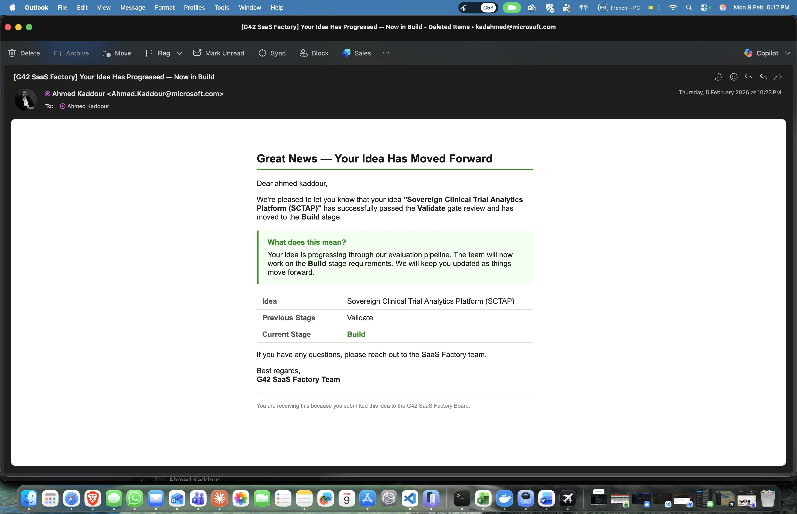
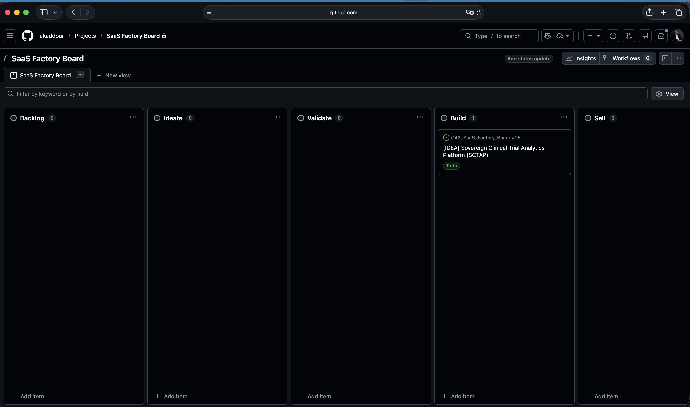

G42 SaaS Factory
Validation Engine Guide
Stage-Gate Governance, AI-Powered Triage & Product Lifecycle Management
G42 GROUP — CONFIDENTIAL
1 Executive Summary
The G42 SaaS Factory operates a five-stage, stage-gate governance system that takes product ideas from initial nomination through validation, build, commercialisation, and continuous review. Every idea must pass defined entry criteria, complete stage-specific checklists, and clear an exit gate before advancing. The system is designed to ensure rigorous evaluation while maintaining velocity — only the strongest ideas with clear market evidence, sound unit economics, and accountable ownership progress to product development.
Product Lifecycle Pipeline
Ideate
Generate ideas with clear business value
→
Validate
Score, rank and decide: GO / HOLD / KILL
→
Build
Develop functional SaaS products
→
Sell
Package offering, go to market
→
Review
Assess performance, iterate
Stakeholder Accountability
Three stakeholder groups share accountability across the lifecycle:
| Stakeholder | Primary Role | Leads | Supports |
|---|
| Business Units (BUs) |
Generate ideas, lead execution, drive sales |
Ideate, Build, Sell |
Validate, Review |
| Group (G42 SaaS Factory) |
Provide templates, evaluate via Validation Engine, allocate ISE, define KPIs |
Validate, Review |
Ideate, Build, Sell |
| Microsoft (MSFT) |
Validate via global vertical knowledge, co-build with ISE, activate Azure Marketplace |
— |
All stages |
Idea Types
| Type | Description |
|---|
| Greenfield | Completely new product idea |
| Brownfield | SaaSify an existing project or solution |
| White-label | Partner white-labeling opportunity |
SaaS Readiness Tracks
| Track | Meaning | Implication |
|---|
| Track A | SaaS-ready — can be delivered as cloud-native SaaS on Azure | Fast-track to Build |
| Track B | Modernize-first — requires significant re-architecture | Additional modernisation epics before Build |
| Unknown | Readiness not yet assessed | Must be resolved during Validate |
2 Idea Intake Form — Microsoft Forms
The intake form captures all Template 1 fields, collecting structured data from BU submitters. Below is the complete 22-field form across 7 sections, as deployed in Microsoft Forms.
3 Validation Engine Stages
Entry Criteria
- Idea submitted via approved channel (Microsoft Forms or GitHub issue template)
- BU sponsor identified
Template 1 — Idea Intake Form (17 Fields)
| # | Field | Guidance |
|---|
| 1 | Idea name | Short, descriptive name |
| 2 | Affiliate / BU | Submitting business unit |
| 3 | Vertical | Healthcare, Government, Financial Services, Cybersecurity, Education, Other |
| 4 | Problem statement | What problem are we solving? For whom? Why now? |
| 5 | Ideal Customer Profile (ICP) | Sector, size, geography, regulatory profile, buyer personas |
| 6 | Value hypothesis | Quantified outcome: cost reduction, compliance, time saved, revenue |
| 7 | Success metrics (initial) | North-star metric + 3–5 leading indicators |
| 8 | Proposed solution | Solution summary (1–2 sentences) |
| 9 | Differentiation | Why G42? Why Azure? Competitive advantage |
| 10 | SaaS readiness (initial) | Track A / Track B / Unknown |
| 11 | Key constraints | Data residency, compliance, integrations, latency, sovereignty |
| 12 | Customer evidence available | Existing pipeline / existing customers / none |
| 13 | Requested support — Microsoft | Field validation / Marketplace / Co-sell / ACR mapping |
| 14 | Requested support — Microsoft ISE | Feasibility / Accelerators / Engineering capacity |
| 15 | Requested support — G42 SaaS Factory | Identity/tenant mgmt, metering, observability, CI/CD |
| 16 | Proposed timeline | Target MVP date / Target GA date |
| 17 | Named owners | G42 PO, Affiliate PO, Engineering Lead |
Submission Completeness Check
All five items must be confirmed before the idea is accepted into the pipeline:
| # | Check |
|---|
| 1 | Problem statement is clear and specific (not generic) |
| 2 | ICP (Ideal Customer Profile) is well-defined with specific personas |
| 3 | Success metrics are proposed and measurable |
| 4 | Constraints captured (data residency, compliance, integrations) |
| 5 | Named owners assigned (not TBD or placeholder names) |
Exit Criteria
- All submission completeness check items confirmed
- Admin approval granted to advance to Validate
Stakeholder Responsibilities
| Stakeholder | Role |
|---|
| BUs | Provide information as required |
| Group | Evaluate against the Validation Engine |
| MSFT | Support information provision and field validation |
Prioritization Scorecard (100 points)
Each of the 14 criteria is scored 0–5. The score is converted to weighted points:
Weighted pts = (Score ÷ 5) × Weight | All weights must sum to 100
Category: Market & Strategic Fit
| # | Criterion | Evidence Required (minimum) |
|---|
| 1 | Problem severity & urgency | Validated pain; urgency drivers; clear buyer |
| 2 | Repeatability across customers | Clear repeatable use case; not bespoke |
| 3 | Design partners / pipeline evidence | 2–3 design partners or credible pipeline |
| 4 | Strategic alignment | Aligned to priority verticals / strategic mandates |
Category: Commercial & Economics
| # | Criterion | Evidence Required (minimum) |
|---|
| 5 | Pricing power / willingness to pay | WTP signal; pricing band tested |
| 6 | Margin potential (COGS + cost-to-serve) | COGS drivers understood; gross margin path |
| 7 | Sales motion feasibility | Direct / partner / co-sell path defined |
Category: Technical & Delivery Feasibility
| # | Criterion | Evidence Required (minimum) |
|---|
| 8 | SaaS readiness / complexity | Track A/B decided; key epics identified |
| 9 | Security & compliance feasibility | Threat model v1; control mapping; evidence plan |
| 10 | Operability (SRE readiness) | SLOs, DR approach, run ownership feasible |
| 11 | Integration complexity | Integration map; known dependencies |
Category: Partnership Leverage (Microsoft / ISE)
| # | Criterion | Evidence Required (minimum) |
|---|
| 12 | Microsoft field verification strength | Field input; account relevance; objections |
| 13 | Marketplace readiness path clarity | Listing requirements and path understood |
| 14 | ISE accelerator fit / engineering leverage | ISE scope / accelerators identified |
Decision Thresholds
| Total Score | Recommendation | Track |
|---|
| ≥ 80 | GO (Fast-track) | Track A — SaaS-ready |
| 65 – 79 | GO (Modernize-first) | Track B — Conditional |
| 50 – 64 | HOLD (evidence gaps) | Paused |
| < 50 | KILL | Rejected |
| Any + red-flag | HOLD (red-flag override) | Auto-hold |
Note: If fewer than 14 criteria are scored, the result is INCOMPLETE — all criteria must be scored for a valid result.
Red-Flag Overrides (Auto-HOLD)
If any of the following conditions is true, the recommendation is automatically set to HOLD regardless of the total score. The hold persists until the red flag is resolved.
- 1. No viable tenancy or data isolation approach for target segment — the product cannot provide adequate data separation or multi-tenancy
- 2. No design partner or pilot path — no identified design partner, pilot customer, or credible path to early customer engagement
- 3. No accountable product owner — no named individual has accepted accountability for the product's success
- 4. Unit economics structurally negative — cost structure fundamentally exceeds revenue potential with no mitigation path
Gate Decision Types
| Decision | Meaning | Action |
|---|
| GO Fast-track | SaaS-ready, proceed directly to Build | Track A plan initiated |
| GO Modernize-first | Approved with mandatory modernisation epics | Track B plan initiated |
| HOLD | Paused pending resolution of evidence gaps or red flags | Remains in Validate |
| KILL | Idea rejected; no further investment | Issue closed |
Validation Templates (2–5)
| Template | Name | Purpose |
|---|
| 2 | Market Verification Pack | Confirm demand, urgency, willingness to adopt/pay, route-to-market. Joint effort between G42 and Microsoft. Sections: executive summary, G42 market evidence, Microsoft market verification, GTM motion hypothesis. |
| 3 | Technical Evaluation Pack | Confirm SaaS feasibility on Azure, identify delivery approach, surface risks. Sections: current state, target SaaS model, security feasibility, operability, SaaS readiness classification. |
| 4 | Business Plan (Lite) | Quantify value, validate commercial viability, define investment ask. Sections: executive summary, market size, financial model, ACR logic, risks, investment ask. |
| 5 | Final Recommendation Memo | Document a defensible gate decision. Fields: decision, rationale, scorecard result, red-flag check, conditions to proceed, dependencies, investment ask, target dates, named owners. |
Exit Criteria
- Positive GO decision recorded
- Prioritisation complete (scorecard finalised, rank assigned)
- Resources allocated for Build stage
Template 6 — Product Documentation Pack
Attach this checklist to every GO recommendation. All items must be created or explicitly waived with rationale.
| # | Document |
|---|
| 1 | Product one-pager (problem, ICP, value, KPIs) |
| 2 | PRD-lite (MVP scope, journeys, acceptance criteria) |
| 3 | Architecture outline + tenancy decision record |
| 4 | Security feasibility pack (threat model v1 + evidence plan) |
| 5 | Commercial spec (pricing/packaging v1 + tier definitions) |
| 6 | Delivery plan (milestones, resourcing, risks, dependencies) |
| 7 | Operational readiness plan (SLOs, DR, runbooks, support model) |
| 8 | Marketplace readiness plan (if applicable) |
Template 7 — Product Roadmap (12–18 months)
| Phase | Timeframe | Outcome | Key Capabilities |
|---|
| MVP | 0–90 days | Minimum viable product delivered | Core features for design partner validation |
| GA | 90–180 days | General availability release | Full feature set, security hardened, marketplace-listed |
| Scale | 6–12 months | Growth and expansion | Multi-region, advanced features, partner integrations |
Exit Criteria
- Product is functional and meets quality standards
- All "Must" checklist items complete (or explicitly waived with rationale)
- Product Documentation Pack (Template 6) delivered
- Ready for market release
| # | Item | Details |
|---|
| 1 | Pricing model defined | Pricing tiers established, licensing model confirmed, discount policies set |
| 2 | Sales collateral created | Product datasheets, demo scripts, case studies (if available) |
| 3 | Azure Marketplace listing | Listing created/approved, transact capability enabled, co-sell ready status |
| 4 | Partner channel activated | Partner agreements in place, enablement completed, joint marketing planned |
| 5 | First customers acquired | Pilot customers onboarded, reference customers identified, revenue recognised |
| KPI Category | Metrics |
|---|
| Revenue | ARR, MRR, growth rate |
| Customers | Count, retention rate, NPS |
| Product | Usage, adoption, feature utilisation |
| Operations | Uptime, support tickets, resolution time |
Stage Transition Summary
| From | To | Entry Requirements | Key Gate Artefacts |
|---|
| — | Ideate | Idea submitted via MS Forms or GitHub; BU sponsor identified | Template 1 (Idea Intake Form) |
| Ideate | Validate | All 5 submission completeness checks confirmed; admin approval | Completed intake form |
| Validate | Build | Positive GO decision; prioritisation complete; resources allocated | Template 5 (Memo), Scorecard, Templates 2–4 |
| Build | Sell | Product functional; quality approved; documentation ready | Template 6 (Doc Pack), Template 7 (Roadmap) |
| Sell | Review | Product actively sold; revenue generated; customers onboarded | Sales collateral, Marketplace listing |
| Review | (Continuous) | Ongoing performance monitoring and iteration | KPI dashboards, improvement roadmap |
Automated Email Notifications
When an idea transitions between stages, the submitter automatically receives an email notification. The system sends branded HTML emails via GitHub Actions, keeping stakeholders informed of progress without manual follow-up.

Figure 2: Automated email notification sent to the submitter when SCTAP advanced from Validate to Build
4 Triage Board — GitHub Projects
The SaaS Factory Board provides a kanban view of all ideas across the lifecycle. Custom fields enable multi-dimensional filtering and prioritization.

Figure 1: SaaS Factory Board on GitHub Projects — SCTAP idea in Build stage
SaaS Factory Board
Filter by:
▾ Stage
▾ Business Unit
▾ Priority
▾ Vertical
▾ Type
[IDEA] Smart Building Energy Optimizer
bu:core42
type:greenfield
Medium#28
[IDEA] Maritime Logistics Intelligence
stage:ideate
bu:space42
High#31
[IDEA] EdTech Assessment Platform
stage:ideate
bu:inception
Low#33
[IDEA] GovCloud Document AI
stage:validate
bu:presight
vertical:gov
High#22
[IDEA] Sovereign Clinical Trial Analytics Platform (SCTAP)
stage:build
bu:m42
type:greenfield
vertical:healthcare
track:a
Medium ($1M–$10M)#25
Custom Fields
| Field | Type | Values |
|---|
| Stage | Single select | Backlog, Ideate, Validate, Build, Sell, Review, Rejected |
| Business Unit | Label | Presight, Analog, Core42, M42, Inception, Astratech, Khazna, AIQ, CPX, Space42 |
| Idea Type | Label | Greenfield, Brownfield, White-label |
| Priority | Single select | High, Medium, Low |
| Business Value Score | Number | 0–100 (from prioritization scorecard) |
| Effort Score | Single select | S, M, L, XL (T-shirt sizing) |
5 AI-Powered Triage — Ideation Expert
Every new idea submission automatically triggers an AI-powered assessment that evaluates the submission against the Validation Engine criteria, identifies gaps, researches competitors, and checks for red-flag conditions.
How It Works
Issue
Opened
→
GitHub Actions
Trigger
→
Claude API
Call
→
Structured
Assessment
Comment
→
Label Applied
status:ai-reviewed
Assessment Output Format
| Section | Content |
|---|
| Verdict | Strong / Promising / Needs Work / Concerns — overall quality signal |
| Strengths | What's well-articulated in the submission — specific positives referencing actual content |
| Gaps & Recommendations | What's missing or vague — actionable recommendations to strengthen the idea |
| Competitive Landscape | 2–3 existing competitors or similar solutions in the market |
| Red-Flag Check | Status of each of the 4 red-flag conditions: Clear / Warning / Flagged |
Live Assessment: SCTAP Submission (Issue #25)
The following is the actual AI assessment generated automatically when the SCTAP idea was submitted. The assessment was posted as a comment on Issue #25 within minutes of submission.
Strengths
- Exceptionally detailed submission with specific GCC regulatory context (MOHAP, SFDA, ADHICS)
- Clear sovereign data residency differentiation leveraging G42's Jais AI and Azure UAE/Qatar regions
- Well-defined ICP with specific buyer personas and revenue thresholds ($100M+ pharma/CROs)
- Quantified value hypothesis (40% time reduction, $2M ARR target)
- Strong technical architecture vision using Azure Health Data Services and Confidential Computing
Gaps & Recommendations
- Critical Gap: No named owners (marked TBD) — this is a red-flag condition requiring immediate resolution
- Timeline appears aggressive (MVP Q3 2026) given the complexity of healthcare compliance and AI model fine-tuning
- "Existing pipeline" customer evidence is vague — need specific design partner commitments from named organizations
- Missing unit economics and customer acquisition cost analysis for specialized healthcare vertical
- Should validate technical feasibility of real-time Arabic medical text processing with current Jais model capabilities
Competitive Landscape
- Medidata (Dassault Systèmes) — Market leader in clinical trial management platforms, strong in US/EU but limited GCC presence
- Veeva Vault Clinical — End-to-end clinical suite with global pharma relationships, but no sovereign deployment options
- Oracle Health Sciences Cloud — Enterprise clinical data management with regulatory compliance tools, US-hosted only
Red-Flag Check
- ✓ Tenancy / Data Isolation — Clear tenancy approach (Azure multi-tenant with confidential computing)
- ⚠ Design Partner / Pilot Path — Warning on design partners (pipeline claimed but no named commitments)
- ✗ Accountable Product Owner — Flagged — No accountable product owner assigned
- ✓ Unit Economics — Clear unit economics path with defined ARR targets
Assessment Approach — Strengths & Limitations
Strengths
- Automated first-pass saves board members 30–60 minutes per submission review
- Consistent application of evaluation criteria across all submissions — no reviewer fatigue or bias
- Competitive landscape research adds immediate market context that submitters often omit
- Red-flag detection catches critical gaps early (e.g., TBD owners, missing design partners)
- Structured output format enables quick comparison across ideas and standardized board discussion
- Immediate feedback — assessment posted within minutes of submission, enabling rapid iteration
Limitations
- Cannot validate customer evidence claims — pipeline and design partner claims are taken at face value
- Competitive landscape based on training data — may miss recent market entrants or pivots
- No access to internal G42 financials or strategic priorities — cannot assess portfolio-level fit
- Cannot interview stakeholders or probe vague responses — assessment quality depends on submission quality
- No scoring capability — provides qualitative assessment but does not generate the 100-point prioritization score
- Garbage in, garbage out — a well-written but fundamentally flawed idea may receive an optimistic assessment
Technical Implementation
| Component | Details |
|---|
| Trigger | GitHub Actions on: issues: types: [opened] — fires when any issue is created |
| Filter | Only runs when issue body contains "SaaS Product Idea Nomination" |
| AI Model | Claude Sonnet (AI-powered assessment engine) |
| Context | Full issue body + title passed as user prompt; evaluation criteria embedded in system prompt |
| Output | Structured markdown comment posted to the issue; status:ai-reviewed label applied |
| Max Tokens | 1,500 tokens — sufficient for 200–300 word assessment |
Workflow File
Location: .github/workflows/ideation-expert.yml
Permissions: contents: read, issues: write
6 Governance & Label Reference
Label Taxonomy
Stage Labels
stage:ideate
stage:validate
stage:build
stage:sell
stage:review
Decision Labels
decision:go-fast-track
decision:go-modernize
decision:hold
decision:kill
Track Labels
track:a-saas-ready
track:b-modernize-first
Status Labels
status:needs-info
status:blocked
status:ready-for-review
status:red-flag
status:ai-reviewed
Idea Type Labels
type:greenfield
type:brownfield
type:whitelabel
Vertical Labels
vertical:healthcare
vertical:government
vertical:financial-services
vertical:cybersecurity
vertical:education
vertical:other
Business Unit Labels
bu:presight
bu:analog
bu:core42
bu:m42
bu:inception
bu:astratech
bu:khazna
bu:aiq
bu:cpx
bu:space42
Stakeholder Labels
stakeholder:bu
stakeholder:group
stakeholder:msft
Governance Rules
1. Scope Change Control
All scope changes must flow through the product governance cadence. No direct ad hoc engineering requests are permitted.
2. Decision Record Requirements
Every gate decision must record:
- Conditions to proceed (with owners and due dates)
- Named owners (G42 PO, Affiliate PO, Eng Lead, CS Lead, Security Lead)
- Capacity plan (resourcing and FTE allocation)
- Explicit external dependencies (Microsoft/ISE and affiliates)
3. Template Workflow
| Action | Templates |
|---|
| Every idea submitted | Complete Template 1 |
| Ideas advanced to Validate | Complete Templates 2–4 with supporting evidence |
| Gate decision | Produce Template 5 and attach Template 6 (documentation checklist) |
| GO decisions | Publish roadmap using Template 7 |